5305 operations on 12 sheets · products that interchange most share a sheet · on each sheet, "⇄CODE p.N" means change for that line on page N · every stop links to apis.io

p.1 groups.site, Term Store Groups Sets Terms, Term Store Sets Children
448 operations · 28 lines
Interchanges to p.3 (28), p.12 (1)
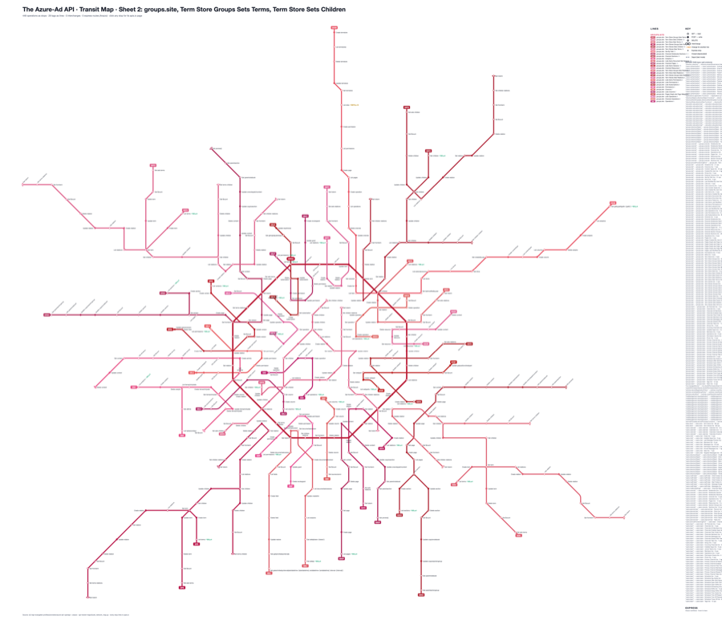
p.2 Service Principals, Directory, Oauth2permission Grants
448 operations · 30 lines
- Service Principals
- Directory
- Oauth2permission Grants
Interchanges to p.5 (2), p.11 (1)
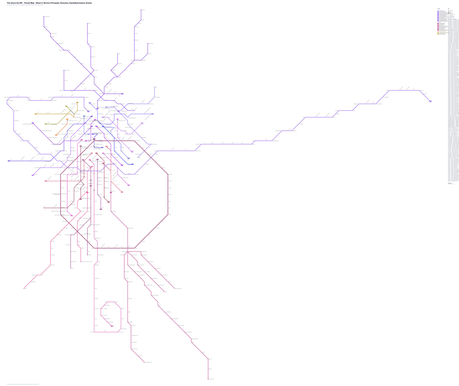
p.3 groups.site, External, Groups
447 operations · 11 lines
- groups.site
- External
- Groups
Interchanges to p.1 (28), p.4 (1), p.5 (5), p.6 (38), p.7 (5), p.8 (4), p.9 (31), p.11 (9), p.12 (11)
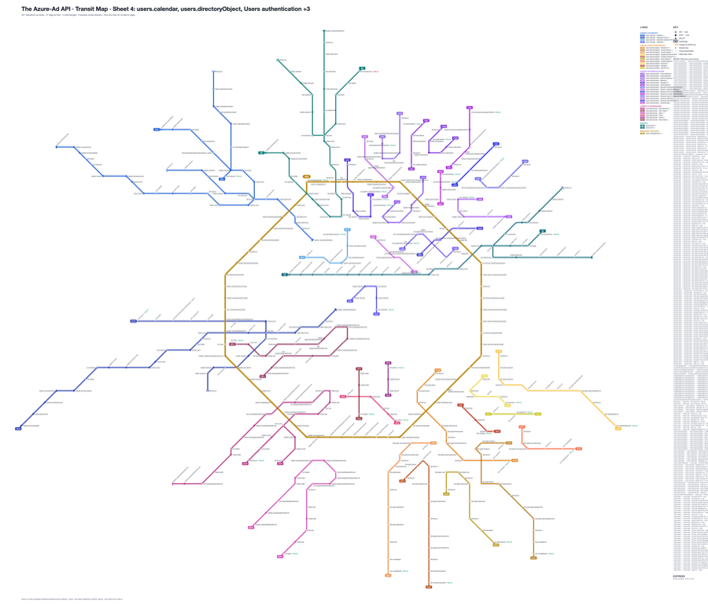
p.4 users.calendar, users.directoryObject, Users authentication +3
447 operations · 37 lines
- users.calendar
- users.directoryObject
- Users authentication
- users.plannerUser
- Events
- Managed Devices
Interchanges to p.3 (1), p.5 (36)
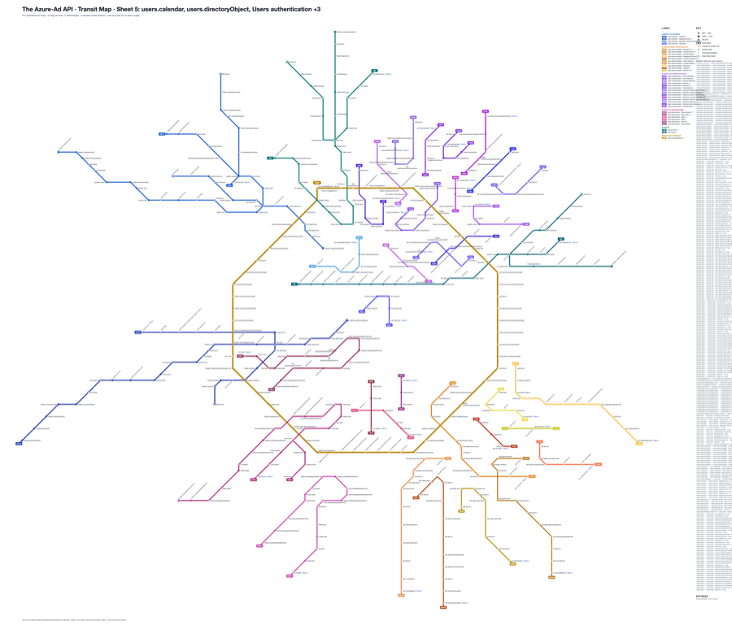
p.5 Threads, Data Security And Governance, Messages +19
447 operations · 28 lines
- Threads
- Data Security And Governance
- Messages
- Adhoc Calls
- Insights
- Employee Experience
- Teamwork
- Copilot
- Photo
- Get Available Extension Properties
- Contacts
- Notes
- Validate Properties
- Solutions
- Directory Role Templates
- Directory Objects
- Cloud Pcs
- Activities
- App Role Assignments
- Presence
- Permission Grants
- Users
Interchanges to p.2 (2), p.3 (5), p.4 (36), p.6 (2), p.7 (52), p.8 (6), p.9 (9), p.11 (9), p.12 (6)
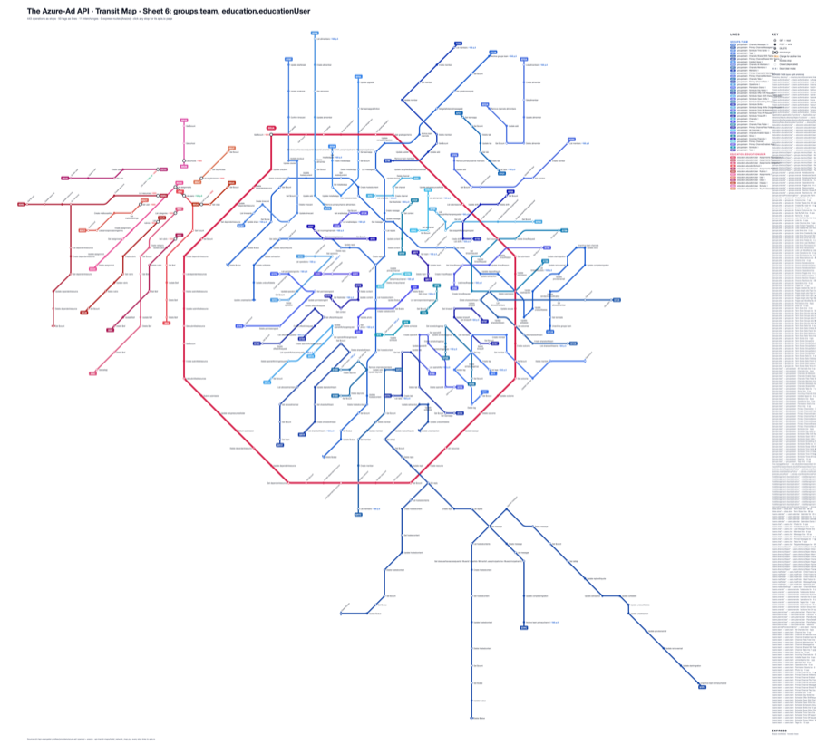
p.6 groups.team, education.educationUser
443 operations · 50 lines
- groups.team
- education.educationUser
Interchanges to p.3 (38), p.5 (2)
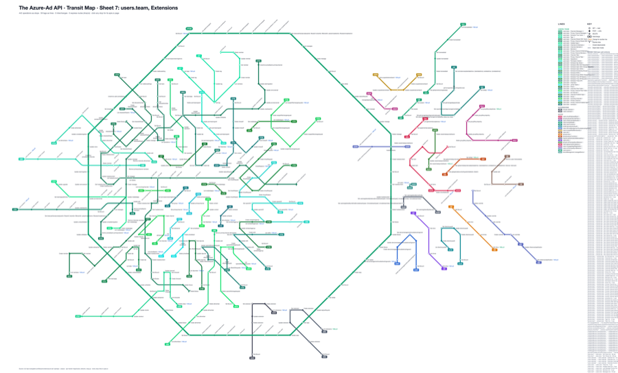
p.7 users.team, Extensions
442 operations · 59 lines
Interchanges to p.3 (5), p.5 (52)
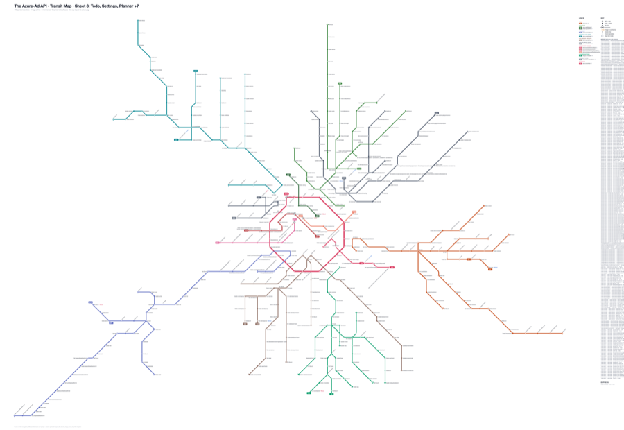
p.8 Todo, Settings, Planner +7
440 operations · 14 lines
- Todo
- Settings
- Planner
- Calendar Groups
- Contact Folders
- Online Meetings
- Directory Roles
- Conversations
- Connections
- Outlook
Interchanges to p.3 (4), p.5 (6)
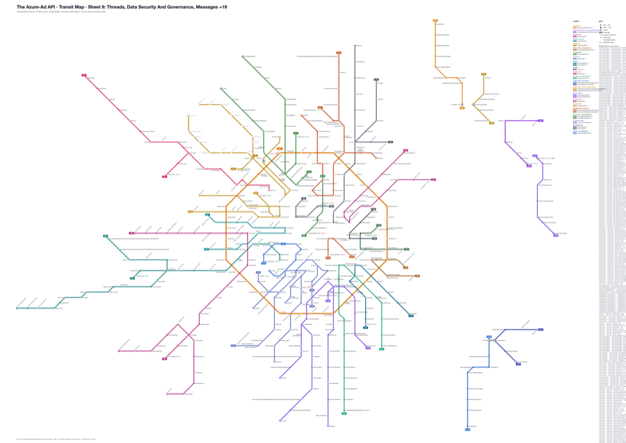
p.9 users.onenote, Applications, groups.site
439 operations · 50 lines
- users.onenote
- Applications
- groups.site
Interchanges to p.3 (31), p.5 (9), p.12 (1)
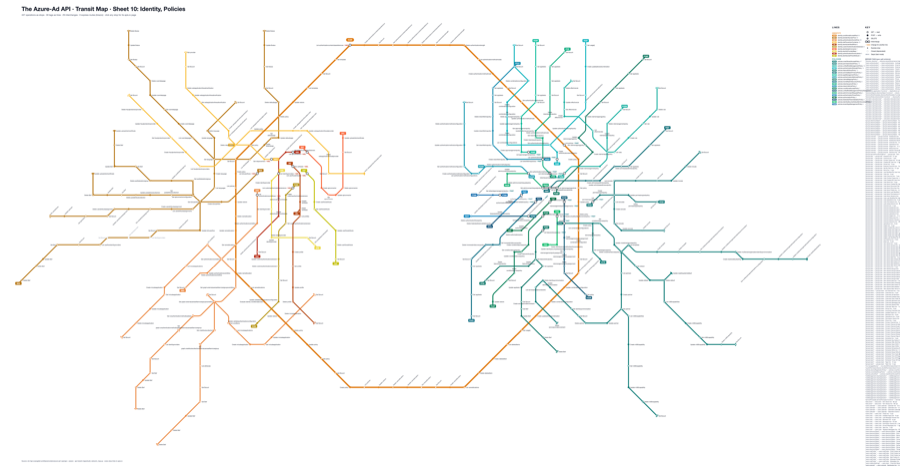
p.10 Identity, Policies
437 operations · 30 lines
Interchanges to none
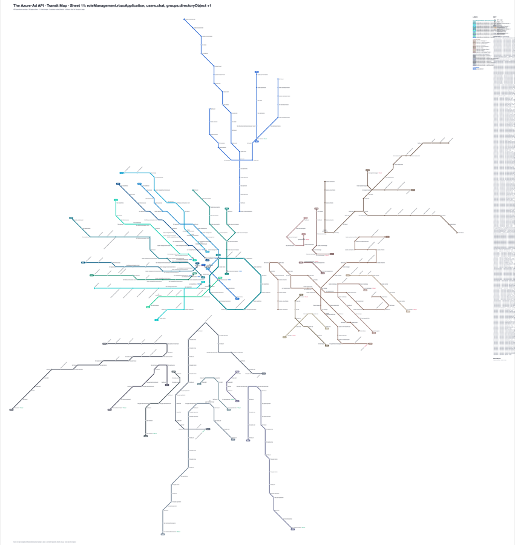
p.11 roleManagement.rbacApplication, users.chat, groups.directoryObject +1
436 operations · 30 lines
- roleManagement.rbacApplication
- users.chat
- groups.directoryObject
- Calendar
Interchanges to p.2 (1), p.3 (9), p.5 (9)
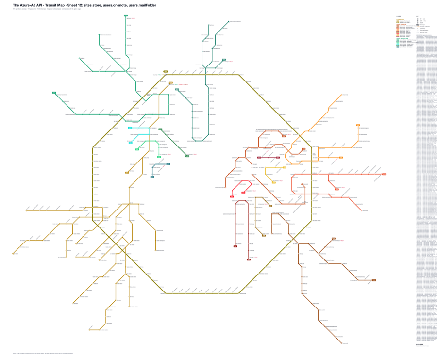
p.12 sites.store, groups.onenote, users.mailFolder
431 operations · 17 lines
- sites.store
- groups.onenote
- users.mailFolder
Interchanges to p.1 (1), p.3 (11), p.5 (6), p.9 (1)